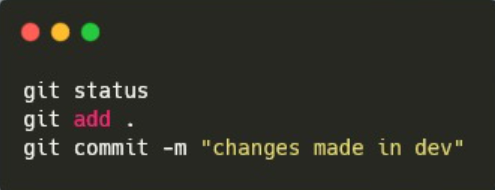

Git Clone
Git clone tem como principal proposta clonar todos os arquivos de repositório remoto para um repositório local. Todo o histórico de commits, branches e merges são copiados também
Git Branch
O Git branch é um comando usado para realizar operações com branches, ou seja, ramificações do código. Essas operações podem ser criar, listar, renomear ou excluir.
Git Commit
O Git commit permite que você crie um commit, ou seja, você consegue guardar o estado do seu repositório naquele momento, ao longo do tempo, você vai conseguir ver uma “história” do seu repositório.

Git Merge
Git merge permite que você pegue as linhas criadas a partir do Git branch e faça uma integração para a ramificação principal. É feito da combinação de várias sequências de commits um histórico unificado.

Pull Request
Pull request é um mecanismo onde um desenvolvedor pode gerar uma notificação que sinaliza a conclusão do desenvolvimento. Isso permite que todos os envolvidos saibam que precisam fazer o merge do código na branch principal.